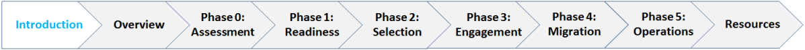

<!-- ---
title: "Introduction to Modernization and Migration Management (M3)"
layout: base
---
<br>
<CENTER>
<BR>
  <table class="m3-table" style="border-style: hidden;">
      {% include m3.nav.image.map.html %}
<tbody>
<tr>
<td COLSPAN=2 style="font-family: calibri; font-size: 36px; color: #00a2e8; border: 1px solid #FFFFFF;"><span
class="PhaseTitle"></span></td>
</tbody>
</table>
</CENTER>

<BR>
<section class="usa-section " style="background-color:#205493;">
  <div class="usa-grid">
    <div class="usa-width-one-whole usa-media_block">
  
      <h1 style="color: #ffffff;margin-bottom:15px;margin-top:0px;">Introduction to Modernization and Migration Management (M3)</h1>
</div>

    <div class="usa-width-one-whole usa-media_block">
      <p style="color:white">Transitions are difficult but can be successful with sufficient planning and follow-through. M3 is a framework to help agencies achieve successful outcomes and reduce risk during administrative system and/or service modernizations and migrations.</p>
      <h5 style="padding:16px;color:white;background-color:#02bfe7;border-radius:.4em;width:244px;cursor:pointer;text-align: center;"><a style="text-decoration:none;color:white;font-size:1rem;" href="{{ site.baseurl }}/assets/files/2018_M3_Playbook_Final.pdf">Download the M3 Playbook</a></h5>
      </div>
    </div>

</section>
<section class="usa-section usa-graphic_list">
  <div class="usa-grid usa-graphic_list-row">
    <div class="usa-width-one-whole usa-media_block">
       <div class="usa-media_block-body">
    <h2>What is the M3 Framework?</h2>
    <p stlye="padding-bottom:10px;">The M3 Framework segments modernizations and migrations into discrete phases. Each phase includes a series of objectives and recommended activities that are grouped across four workstreams. Program Management; Workforce, Org, & Stakeholders; Technology; and Process & Service Delivery.</p >
      <br>
  <CENTER>
    
    <BR>
 Figure 1
 </CENTER>

     </div>
   </div>
 </section>

 <section class="usa-section usa-graphic_list">
   <div class="usa-grid usa-graphic_list-row">
     <div class="usa-width-one-whole usa-media_block">
        <div class="usa-media_block-body">
      <h2>What is the M3 Playbook?</h2>

        <p>The Playbook consists of guidance and tools to help agencies plan for and navigate transitions. It was developed based on feedback from over 100 Government and industry experts, reflects best practices and lessons learned from prior migrations and is updated annually.</p>

        <p><b>70+ Activities:</b> Descriptions for how to apply the M3 framework, including detailed activity steps, inputs, outputs, lessons learned, and stakeholders involved. </p>

        <p><b><a href="{{ site.baseurl }}/m3resources">20+ Templates:</a> </b>Documents that aid customers and providers in the completion of activities, and provide key considerations. </p>

        <p><b><a href="{{ site.baseurl }}/assets/files/M3PlaybookGuidance9.13.18FINAL.pdf">Supporting Guidance:</a></b> Additional background support for each activity.</p>

        <p><b><a href="https://community.max.gov/pages/viewpage.action?spaceKey=GSA&title=M3+Artifact+Samples">Sample Artifacts: </a></b>An OMB Max page that includes sample documentation from previous modernization and migration projects.</p>

     <h3>How does the new vision for shared services affect M3?</h3>

      <p>OMB is designating <a href="../qsmo/">Quality Service Management Offices</a> (QSMOs) for specific functional areas. The QSMO is the means to standardize processes, reduce the technology footprint, and reduce governmentwide operating costs.</p>

      <p>For the purposes of this framework, customers of the QSMO should consider the term “provider” throughout the M3 activities, as the responsibility of the QSMO. Updates to M3 will be made in the coming months to align with the new shared services vision and the QSMO implementation plans (e.g. updates to Activities 1.4, 2.1, and 3.3).</p>

    </div>
  </div>
</section>
&nbsp;
    </td><tr>-->
---
layout: default
---

{% assign keyTasks = site.pages | where: 'layout', 'keyTask' | where: 'phase', page.phase %}

{% assign customerTasks = keyTasks | where: 'responsibleParty', "customer" %}
{% assign providerTasks = keyTasks | where: 'responsibleParty', "provider" %}
{% assign qsmoTasks = keyTasks | where: 'responsibleParty', "qsmo" %}
{% assign sumTasks = customerTasks.size | plus: providerTasks.size | plus: qsmoTasks.size %}

<div class="usa-section m3-section">
  <div class="grid-container">
    <div class="grid-row grid-gap space-between">

      <div class="desktop:grid-col-12">
        <a href="{{'/m3/introduction' | relative_url}}">M3 Playbook</a> > Phase {{page.phase}}: {{page.name}}
        <h1>Phase {{page.phase}}: {{page.name}}</h1>
      </div>

      <div class="desktop:grid-col-8">

        <div class="m3-summary-box usa-summary-box" role="complementary">
          <div class="usa-summary-box__body">
            <h2 class="usa-summary-box__heading">Objective</h2>
            <div class="usa-summary-box__text">
              <p>{{page.objective}}</p>
            </div>
          </div>
        </div>
        <div id="FilterList" class="keyTasks filterlist" data-items=".m3-keyTask" data-filters=".m3-tag" aria-live="polite">
          <div id="keyTaskHeader">
            <h2>Key Tasks</h2>
            <label for="keyTaskLegend">Filter Responsible Roles:</label>
            <ul id="keyTaskLegend">
              
              {% if customerTasks.size > 0 %}
                <li>
                  <button class="usa-button m3-tag customer" data-filter="customer" aria-controls="FilterList" role="option" aria-selected="false">
                    <svg class="usa-icon" aria-hidden="true" focusable="false" role="img">
                      <use xlink:href="{{site.baseurl}}/img/spritesheet.svg#{% include categoryTag.html category = "customer" %}"></use>
                    </svg>
                    Customer
                  </button>
                </li>
              {% endif %}
              
              {% if providerTasks.size > 0 %}
              <li>
                <button class="usa-button m3-tag provider" data-filter="provider" aria-controls="FilterList" role="option" aria-selected="false">
                <svg class="usa-icon" aria-hidden="true" focusable="false" role="img">
                  <use xlink:href="{{site.baseurl}}/img/spritesheet.svg#{% include categoryTag.html category = "provider" %}"></use>
                </svg>
                Provider
              </button>
              </li>
              {% endif %}
              
              {% if qsmoTasks.size > 0 %}
              <li>
                <button class="usa-button m3-tag qsmo" data-filter="qsmo" aria-controls="FilterList" role="option" aria-selected="false">
                <svg class="usa-icon" aria-hidden="true" focusable="false" role="img">
                  <use xlink:href="{{site.baseurl}}/img/spritesheet.svg#{% include categoryTag.html category = "qsmo" %}"></use>
                </svg>
                QSMO
              </button>
              </li>
              {% endif %}
              
              {% if sumTasks > keyTasks.size %}
              <li>
                <button class="usa-button m3-tag shared" data-filter="shared" aria-controls="FilterList" role="option" aria-selected="false">
                <svg class="usa-icon" aria-hidden="true" focusable="false" role="img">
                  <use xlink:href="{{site.baseurl}}/img/spritesheet.svg#{% include categoryTag.html category = "shared" %}"></use>
                </svg>
                Shared
              </button>
              </li>
              {% endif %}
            </ul>
          </div>
          <section class="keyTaskCategory programManagement">
            <h3 id="" class="keyTaskCategoryHeading">
              <svg aria-hidden="true" focusable="false" role="img">
                <use xlink:href="{{site.baseurl}}/img/icon-programManagement.svg#icon-programManagement"></use>
              </svg>
              Program Management
            </h3>
            {% assign list = keyTasks | where: 'category', 'programManagement' %}
            {% include keyTaskList.html %}
          </section>
          
          <section class="keyTaskCategory workforce">
            <h3 id="" class="keyTaskCategoryHeading">
              <svg aria-hidden="true" focusable="false" role="img">
                <use xlink:href="{{site.baseurl}}/img/icon-workforce.svg#icon-workforce"></use>
              </svg>
              Workforce, Organization, and Stakeholders
            </h3>
            {% assign list = keyTasks | where: 'category', 'workforce' %}
            {% include keyTaskList.html %}
          </section>
          
          <section class="keyTaskCategory technology">
            <h3 id="" class="keyTaskCategoryHeading">
              <svg aria-hidden="true" focusable="false" role="img">
                <use xlink:href="{{site.baseurl}}/img/icon-technology.svg#icon-technology"></use>
              </svg>
              Technology
            </h3>
            {% assign list = keyTasks | where: 'category', 'technology' %}
            {% include keyTaskList.html %}
          </section>
          
          <section class="keyTaskCategory process">
            <h3 id="" class="keyTaskCategoryHeading">
              <svg aria-hidden="true" focusable="false" role="img">
                <use xlink:href="{{site.baseurl}}/img/icon-process.svg#icon-process"></use>
              </svg>
              Process and Service Delivery
            </h3>
            {% assign list = keyTasks | where: 'category', 'process' %}
            {% include keyTaskList.html %}
          </section>
        </div>

        <div class="m3-summary-box usa-summary-box" role="complementary">
          <div class="usa-summary-box__body">
            <h2 class="usa-summary-box__heading">Criteria to Exit Phase {{ page.phase }}</h2>
            <div class="usa-summary-box__text">
              <ul>
                {% for item in page.exitCriteria  %}
                <li>
                  {% if item.url %}
                  <a href="{{site.baseurl}}/m3/{{ item.url }}">{{ item.name }}</a>
                  {% else %}
                  {{ item.name }}
                  {% endif %}
                </li>
                {% endfor %}
              </ul>
            </div>
          </div>
        </div>

      </div>
      <div class="desktop:grid-col-3">

        <section id="documentation">
          <h2>Phase {{ page.phase }} Artifact Samples:	</h2>
          <a href="https://community.max.gov/pages/viewpage.action?spaceKey=GSA&title=M3+Artifact+Samples">M3 Artifact Samples MAX Page</a>
          <h2>Phase {{ page.phase }} Documentation</h2>
          <ul>
            {% if page.documentation %}
            {% assign documentationByName = page.documentation | sort: "name" %}
            {% for item in documentationByName %}
            <li>
              {% if item.url %}
              <a href="{{site.baseurl}}/m3/{{ item.url }}">{{ item.name }}</a>
              {% else %}
              {{ item.name }}
              {% endif %}
            </li>
            {% endfor %}
              
            {% endif %}
          </ul>
        </section>
        
      </div>
    </div>
  </div>
</div>
